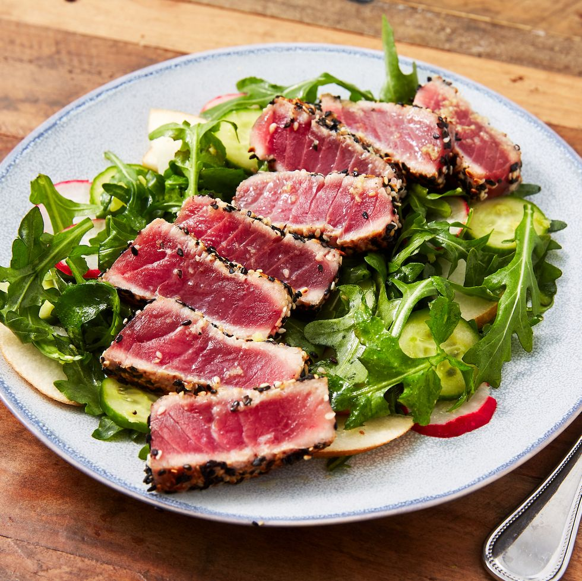
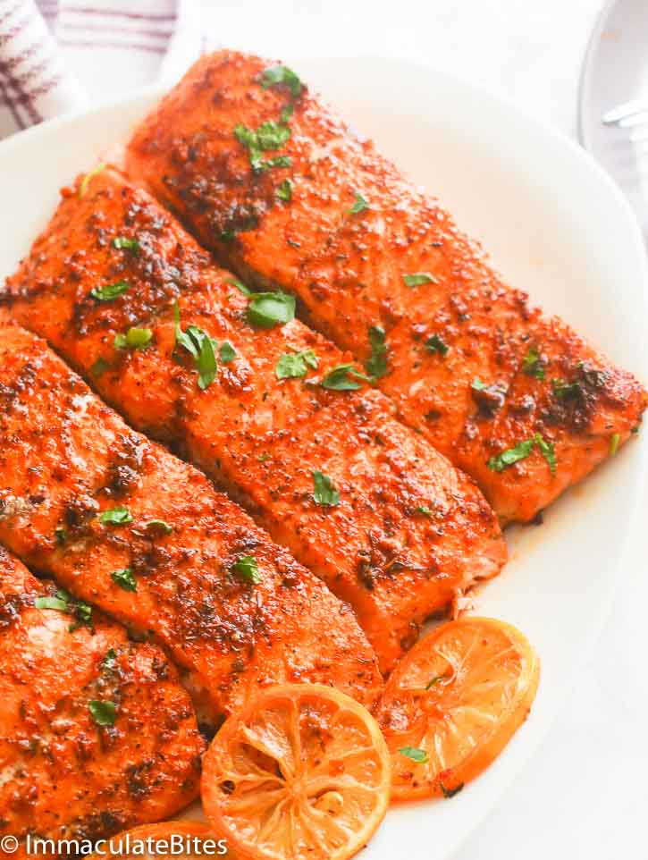

Seared Ahi Tuna and Salad

Ingredients
- 1 ahi tuna steak, 6 ounces
- 2 teaspoons five-spice powder, available on spice aisle
- 1 teaspoon grill seasoning, such as Montreal Steak Seasoning, or salt and coarse pepper
- Cooking spray or vegetable oil, for brushing the grill pan
- 5 ounces, half a sack, mixed prewashed baby salad greens
- 2 radishes, sliced
- 1/4 European cucumber, thinly sliced
- 1/2 teaspoon wasabi paste
- 1 tablespoon rice vinegar or rice vinegar
- 1 tablespoon soy sauce
- 3 tablespoons -virgin olive oil
- Salt and freshly ground black pepper
Instructions
- Coat your steak with a combination of five-spice powder and grill seasoning or salt and pepper. Heat a grill pan or griddle over high heat. Spray grill surface or wipe with a thin layer of oil. Add tuna steak to the hot cooking surface and sear tuna 2 minutes on each side. Remove tuna from heat.
- Combine greens, radishes and cucumber in a bowl. In a smaller bowl, whisk wasabi, vinegar and soy sauce. Whisk in oil to combine dressing. Drizzle dressing over your salad and toss to coat evenly. Slice tuna on an angle and arrange on the salad.
Baked Salmon

Ingredients
- 2 pounds (907.18 g) Salmon fillets
- 3-4 tablespoons (42.53 - 56.70 g) unsalted butter
- 2-3 teaspoons (5.60 - 8.40 g) minced garlic
- 1 tablespoon (6.90 g) onion powder
- 1 tablespoon (6.80 g) paprika
- 1/2 -1 teaspoon (1.80 g) cayenne pepper (optional)
- 2-3 tablespoon (5.30 - 15.90 g) fresh parsley, basil
- salt and pepper to taste
- 1 tablespoon (15 g) or more lemon juice
Instructions
- Position a rack in the center of the oven and preheat the oven to 400ºF. Line a baking sheet with foil or baking paper, like I did, spray with cooking spray or lightly oil. Set aside.
- Using a sharp knife, make about 4-5 slits on salmon. Dab both sides of salmon dry with paper towels, season both sides with salt and pepper.
- In a small pan set over medium low heat butter, minced garlic, Paprika, onion powder cayenne pepper and parsley or basil. Stir for about 30 seconds or 1 minute. Let this mixture sit for a little bit about 5 minute. Add lemon juice to mixture.
- Brush salmon with spice mixture, making sure every inch is covered with spice .
- Bake until cooked through, about 10-15 minutes, depending on the thickness of your fish and your preference of doneness. When the thickest part of the salmon is easily flaked with a fork, the salmon is perfectly cooked.
- Garnish immediately with lemon slices.